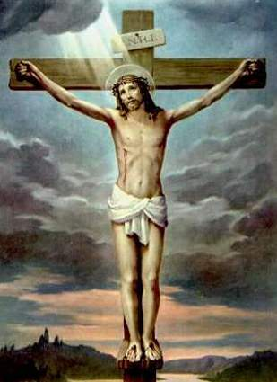

|  |
|
||||
Ce que dit l'Eglise sur Marie
Lectures de la messeLiturgie de la Parole : 1ère lecture : Gn 3, 9-15.20 ou Ac 1 , 12-14 Psaume 86 (87), 1-2.3 et .6-7 Evangile : Jn 19, 25-34Les oraisons et la préface : cf. Commun de la Vierge Marie Les textes sur aelf.fr « Ô Marie, aide notre foi ! » Dans son encyclique Lumen Fidei parue en juin 2013, le pape François a écrit une prière à Marie, Mère de l’Eglise et Mère de notre foi Prière à Marie extraite de Lumen Fidei Marie, image et modèle de l’Eglise En octobre 2013, poursuivant un cycle d’enseignements sur l’Eglise, le pape François a consacré une catéchèse à Marie, exprimant son souhait de tourner son regard vers Marie « comme image et modèle de l’Eglise ». Catéchèse du pape François sur Marie, Mère de l'Eglise |
|||||
|
designed by Jean Lionel Tel : 79614036 designed by IGIRANEZA Nina Tel : 79614036 |
|||||